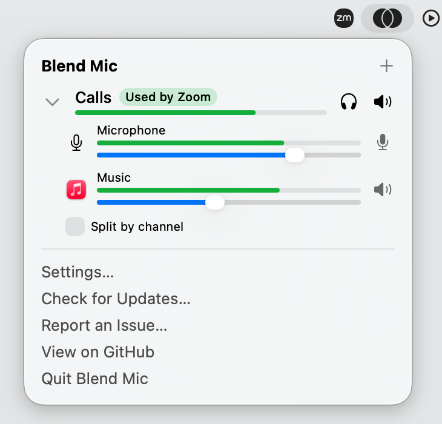
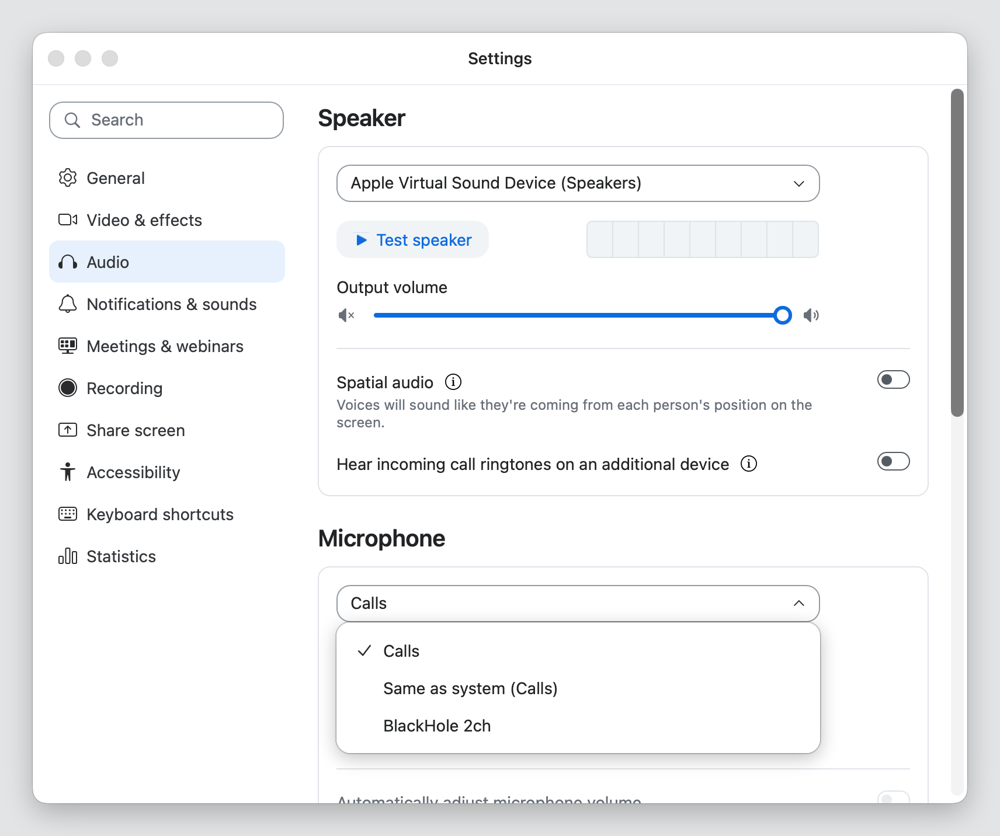

Build your own mic.
Blend Mic mixes your voice with any app or everything your Mac plays into one microphone, with a slider for each. Record a call with your AirPods in, or play music into Discord under your voice.




I wanted something simple to hook into Discord and my call recorder. BlackHole needed a lot of setup before anything worked, and Loopback costs $99, so I made one that sits in the menu bar. It takes an app's sound without rerouting it, so you keep hearing it, and it leaves the call out of system audio, so the call never hears itself.
Record calls with headphones on
Your recorder picks Blend Mic and hears you and the call, even with AirPods in. Split mode puts you on the left and the call on the right, and Voice uses it to transcribe each side. Tell the other side you're recording.
Mic, apps or all system audio
Any input device, any app or everything the Mac plays. A call using the mix never hears itself.
Up to 16 mixes
Each mix is its own microphone, so Discord can use one while a recorder uses another.
Updates itself
New versions install on their own while no app is using a mix, so a call is never cut off.
Rough edges
Apple silicon, macOS 15 or later. It installs a Core Audio plug-in that runs in user space, not a kernel extension, and Uninstall in its settings removes it. Mixes go silent while Blend Mic is closed, so turn on Open at login.
Your audio never leaves your Mac, and there are no accounts. Blend Mic checks for updates once a day, and the update server counts those checks by app, version and country and never stores your IP address.
Or with Homebrew: brew tap spashii/blend https://github.com/spashii/blend, then brew trust spashii/blend and brew install --cask blend